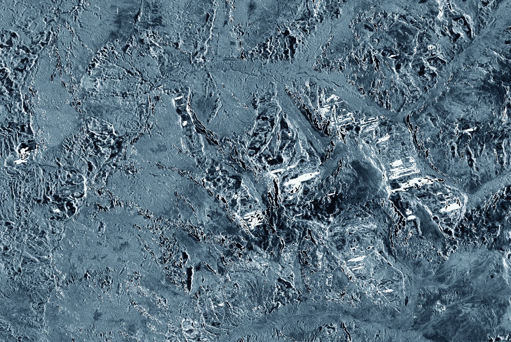
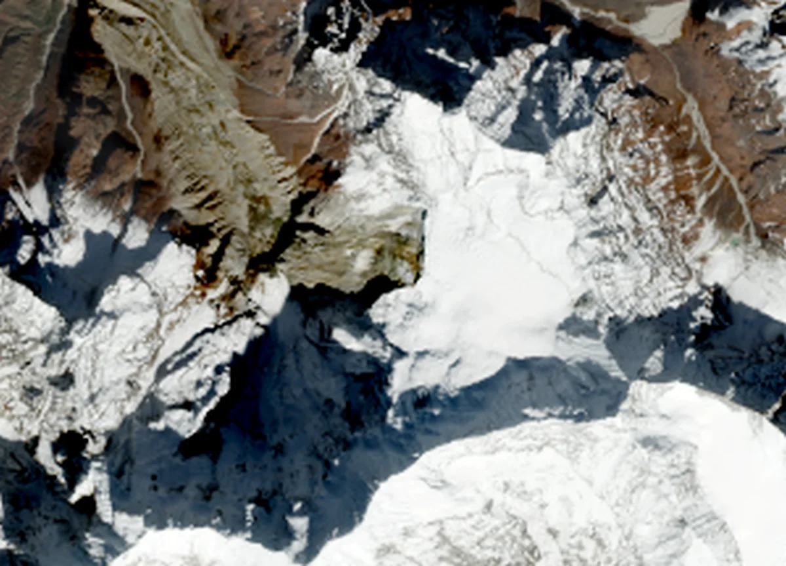
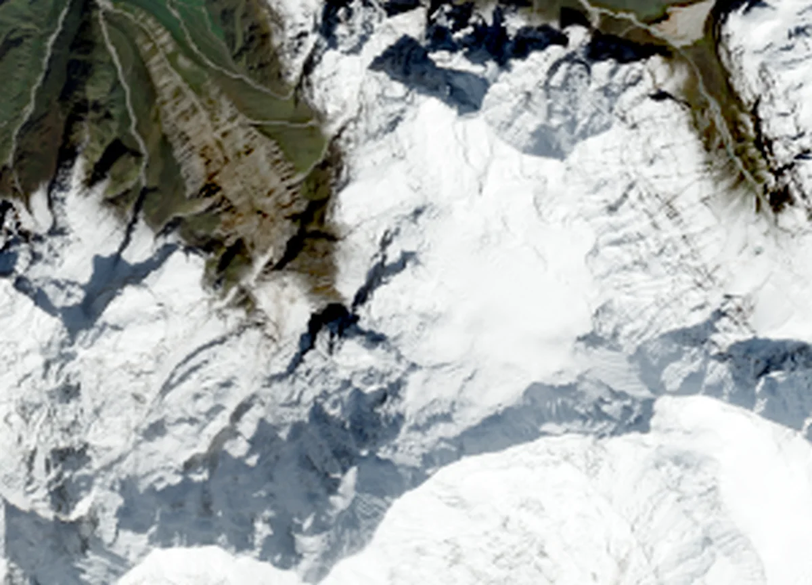

The mountain
moved first.
A month before the north face of Langtang Lirung fell, a radar satellite recorded a small patch of it shifting about five centimetres. This page shows what the data holds, and what it does not.
NISAR radar image, 19 August 2026, seven days before the collapse. The ring marks the patch.
26 August 2026, 08:37 in the morning
A block of rock and ice about 600 metres wide broke off Langtang Lirung in Nepal and became a flood that ran about 100 kilometres downstream. Cloud hid the slope from cameras. Radar sees through cloud, and one radar satellite had been passing over every twelve days.


How a satellite 747 kilometres up notices five centimetres
-
First pass
The satellite sends a radar wave and records where in the wave each echo returns.
-
Twelve days later
Same path, same measurement. A spot that moved returns its echo at a different point in the wave.
-
Compare
Each spot is coloured by that difference. Blue: no change. Amber: about six centimetres.
Radar measures along its own line of sight, so we report each step as “equivalent to” a distance, not a true ground distance.
What the satellite saw
Four pairs of passes over the same 2.4 kilometres of slope. The box is the patch.
4.7 to 5.6 centimetres in twelve days, where the pair before showed 0.6.
Five choices of “stable rock” agree. The patch centre lies 44 metres from the collapse source mapped by other researchers.
Was it unusual, or do slopes do this all the time?
The same measurement on every comparable slope in 550 square kilometres, in the same twelve days.
None of the 361 showed a step as large.
One year, twenty-six frames
Winter: small steps we cannot yet explain. Spring: unreadable, possibly melting snow. Then July.
The last month cannot be read
NISAR missed a pass, and the next pair is a jumble we will not put a number on. Other researchers report the slope speeding up in this period. A second radar satellite, Sentinel-1, passed over seven times; the last was 50 hours before the collapse.
One flag at the right place, among 270
A simple rule: flag ground that was quiet and then shifts. Over the year it flags the Langtang slope once. It also raises 268 other flags that nobody has checked, so this is a watch list and not a warning system.
Could this time an alarm?
What the data supports
The step was in a free, standard product 31 days before the collapse.
What it does not
We do not know when that product was published. The rule was tuned on this slope, so this is not a fair test. Nobody would have known which flag to act on.
What it would take to make this real
A fair test
Run the frozen rule, unchanged, on a different slope failure it has never seen.
Check the other flags
Compare a sample of the 268 against camera images: glacier, snow or real movement?
More than one satellite
With Sentinel-1 a radar passed every three to five days in August, but it could not be read here. More passes help only where the ground stays readable.
Speed
Measure the delay between a pass and its published product. An alarm is only as early as its data.